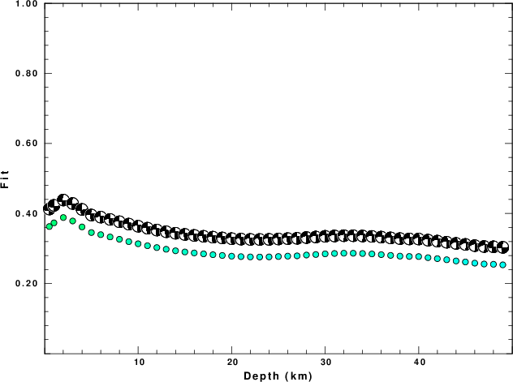

The focal mechanism was determined using broadband seismic waveforms. The location of the event and the and stations used for the waveform inversion are shown in the next figure.
|
|
|
|
The program wvfgrd96 was used with good traces observed at short distance to determine the focal mechanism, depth and seismic moment. This technique requires a high quality signal and well determined velocity model for the Green functions. To the extent that these are the quality data, this type of mechanism should be preferred over the radiation pattern technique which requires the separate step of defining the pressure and tension quadrants and the correct strike.
The observed and predicted traces are filtered using the following gsac commands:
hp c 0.02 n 3 lp c 0.10 n 3The results of this grid search from 0.5 to 19 km depth are as follow:
DEPTH STK DIP RAKE MW FIT
WVFGRD96 0.5 90 65 0 3.32 0.3627
WVFGRD96 1.0 90 65 0 3.35 0.3732
WVFGRD96 2.0 85 70 -20 3.39 0.3885
WVFGRD96 3.0 85 75 -15 3.39 0.3786
WVFGRD96 4.0 85 75 -15 3.40 0.3616
WVFGRD96 5.0 270 75 10 3.40 0.3456
WVFGRD96 6.0 270 75 10 3.40 0.3396
WVFGRD96 7.0 270 75 10 3.41 0.3330
WVFGRD96 8.0 270 75 10 3.41 0.3264
WVFGRD96 9.0 270 75 10 3.42 0.3197
WVFGRD96 10.0 270 70 10 3.43 0.3136
WVFGRD96 11.0 270 70 10 3.44 0.3080
WVFGRD96 12.0 270 70 10 3.45 0.3027
WVFGRD96 13.0 270 70 10 3.45 0.2979
WVFGRD96 14.0 270 70 10 3.46 0.2936
WVFGRD96 15.0 270 70 10 3.46 0.2902
WVFGRD96 16.0 270 70 10 3.47 0.2874
WVFGRD96 17.0 270 70 10 3.48 0.2848
WVFGRD96 18.0 270 70 10 3.49 0.2824
WVFGRD96 19.0 270 70 10 3.49 0.2802
WVFGRD96 20.0 270 65 10 3.51 0.2782
WVFGRD96 21.0 270 65 10 3.52 0.2769
WVFGRD96 22.0 270 65 10 3.52 0.2760
WVFGRD96 23.0 270 60 10 3.53 0.2758
WVFGRD96 24.0 270 60 10 3.54 0.2761
WVFGRD96 25.0 270 60 10 3.55 0.2772
WVFGRD96 26.0 270 60 10 3.55 0.2783
WVFGRD96 27.0 270 60 5 3.56 0.2791
WVFGRD96 28.0 265 60 -10 3.56 0.2814
WVFGRD96 29.0 265 60 -10 3.56 0.2829
WVFGRD96 30.0 265 60 -10 3.57 0.2848
WVFGRD96 31.0 265 65 -10 3.57 0.2859
WVFGRD96 32.0 265 65 -10 3.58 0.2867
WVFGRD96 33.0 265 65 -10 3.58 0.2866
WVFGRD96 34.0 265 65 -10 3.59 0.2858
WVFGRD96 35.0 265 70 -10 3.59 0.2846
WVFGRD96 36.0 265 70 -10 3.60 0.2826
WVFGRD96 37.0 265 70 -10 3.61 0.2804
WVFGRD96 38.0 265 70 -5 3.62 0.2783
WVFGRD96 39.0 265 70 -5 3.64 0.2774
WVFGRD96 40.0 265 60 -5 3.69 0.2771
WVFGRD96 41.0 265 60 -10 3.69 0.2739
WVFGRD96 42.0 265 60 -10 3.70 0.2711
WVFGRD96 43.0 265 65 -10 3.70 0.2680
WVFGRD96 44.0 260 60 -20 3.72 0.2645
WVFGRD96 45.0 260 60 -20 3.73 0.2617
WVFGRD96 46.0 260 60 -20 3.73 0.2583
WVFGRD96 47.0 260 60 -20 3.74 0.2558
WVFGRD96 48.0 90 80 -15 3.73 0.2550
WVFGRD96 49.0 90 80 -15 3.74 0.2534
The best solution is
WVFGRD96 2.0 85 70 -20 3.39 0.3885
The mechanism correspond to the best fit is
|
|
The best fit as a function of depth is given in the following figure:
|  |
|
|
The comparison of the observed and predicted waveforms is given in the next figure. The red traces are the observed and the blue are the predicted. Each observed-predicted component is plotted to the same scale and peak amplitudes are indicated by the numbers to the left of each trace. A pair of numbers is given in black at the right of each predicted traces. The upper number it the time shift required for maximum correlation between the observed and predicted traces. This time shift is required because the synthetics are not computed at exactly the same distance as the observed and because the velocity model used in the predictions may not be perfect. A positive time shift indicates that the prediction is too fast and should be delayed to match the observed trace (shift to the right in this figure). A negative value indicates that the prediction is too slow. The lower number gives the percentage of variance reduction to characterize the individual goodness of fit (100% indicates a perfect fit).
The bandpass filter used in the processing and for the display was
hp c 0.02 n 3 lp c 0.10 n 3
|
|
| Focal mechanism sensitivity at the preferred depth. The red color indicates a very good fit to thewavefroms. Each solution is plotted as a vector at a given value of strike and dip with the angle of the vector representing the rake angle, measured, with respect to the upward vertical (N) in the figure. |
A check on the assumed source location is possible by looking at the time shifts between the observed and predicted traces. The time shifts for waveform matching arise for several reasons:
Time_shift = A + B cos Azimuth + C Sin Azimuth
The time shifts for this inversion lead to the next figure:
The derived shift in origin time and epicentral coordinates are given at the bottom of the figure.